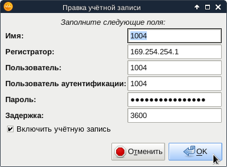

Отвлечёмся ненадолго от Asterisk и обратимся к смежной теме - программным телефонам для Linux.
Ekiga - это программа, сочетающая в себе возможности программного телефона, поддерживающего протоколы SIP и H.323, и клиента обмена мгновенными сообщениями, поддерживающего протокол Jabber/XMPP. Кроме звонков и обмена текстовыми сообщениями, программа при наличии веб-камеры, позволяет также обмениваться с собеседником видео. Программа была создана в рамках одноимённого сервиса - ekiga.net. В некотором роде его можно считать аналогом Skype, но построенном полностью на открытых технологиях. Конечно, не стоит считать Ekiga полным аналогом Skype, т.к. в Skype имеется много других возможностей - создание конференций, "приземление" звонков (то есть звонки на телефонные номера телефонной сети общего пользования) и т.п.
Установить программу можно очень просто, из репозиториев:
# apt-get install ekiga
Главное окно программы выглядит следующим образом.
Здесь можно увидеть список контактов. Между протоколами не делается никаких различий, все контакты, будь то SIP или XMPP, выводятся в общий список. Поддерживается группировка контактов.
При нажатии на соответствующую кнопку можно переключиться в окно номеронабирателя:
Это окно может оказаться полезным, если нужно позвонить на некий телефонный номер однократно. Постоянных собеседников удобнее добавить в список контактов.
Следующая кнопка отображает историю звонков:
Окно переписки с абонентами Jabber/XMPP выглядит следующим образом:
Стоит отметить, что программа обладает весьма ограниченной поддержкой протокола Jabber/XMPP. Фактически можно видеть только статусы собеседников и переписываться с ними. Нельзя посмотреть профиль собеседника, нельзя отправить или принять файл.
Список учётных записей можно открыть через меню "Правка" - "Учётные записи" или нажатием Ctrl-E:
Вот так выглядят настройки учётной записи Jabber/XMPP:
Настройки очень бедные. Нельзя задать прокси или настроить шифрование.
Вот так выглядят настройки учётной записи SIP:
Тоже очень бедные настройки. Нельзя задать STUN-прокси, нельзя выбрать прослушиваемый интерфейс и порт. Программа будет использовать UDP-порт 5060 и сообщать при регистрации на SIP-прокси IP-адрес первого попавшегося интерфейса, кроме lo.
Авторы явно были под влиянием Gnome HIG и убрали все настройки, которые посчитали лишними, в аналог реестра Windows - каталог .gconf/ с XML-файлами. Чтобы получить доступ к остальным настройкам, нужно установить программу gconf-editor из одноимённого пакета. Например, при помощи такой команды:
# apt-get install gconf-editor
При запуске команды gconf-editor от имени обычного пользователя можно исправлять настройки этого пользователя. Например, прослушиваемый порт можно поменять в параметре apps - ekiga - protocols - sip - listen_port:
Мне это понадобилось сделать для того, чтобы запустить Ekiga и Asterisk на одном и том же компьютере. Поскольку порт 5060 уже используется Asterisk, Ekiga должна использовать другой порт. То же самое может потребоваться сделать, если за компьютером работают несколько пользователей одновременно (мало ли в жизни бывает?) и каждому из них нужно использовать свой SIP-телефон (обычно SIP-телефоны по умолчанию прослушивают UDP-порт 5060, так что одного порта на всех не хватает). К сожалению, это не единственный случай, когда разработчики современных программ для Linux забывают, что Linux - это многопользовательская система, в которой одновременно может работать несколько пользователей, а один и тот же пользователь может открыть одновременно несколько сеансов.
Поменять используемый STUN-прокси тоже можно через gconf-editor:
Как видно, отвечают за него параметры enable_stun и stun_server в ветке apps - ekiga - general - nat.
Ещё один полезный раздел настроек - это список используемых программой портов. В ветке apps - ekiga - protocols - ports есть параметры tcp_port_range и udp_port_range:
Если на компьютере настроен пакетный фильтр, следует по крайней мере разрешить доступ к локальным UDP-портам из этого списка снаружи. Эти порты используются для обмена мультимедийным трафиком - аудио и видео. О назначении портов TCP сказать ничего не могу.
В следующей заметке я опишу настройку Asterisk для обмена видео между программными телефонами Ekiga.